Fundamentals Review · Topic 11
Palliative, Hospice & End of Life
From the guest lecture on palliative, hospice, and end-of-life care (Dr. Abigail Latimer, clinical social worker). Covers palliative vs. hospice care, the interdisciplinary team, serious-illness communication skills, advance care planning and legal documents, ethical issues, the physical dying process, and grief/bereavement.
Palliative vs. Hospice: Key Distinctions
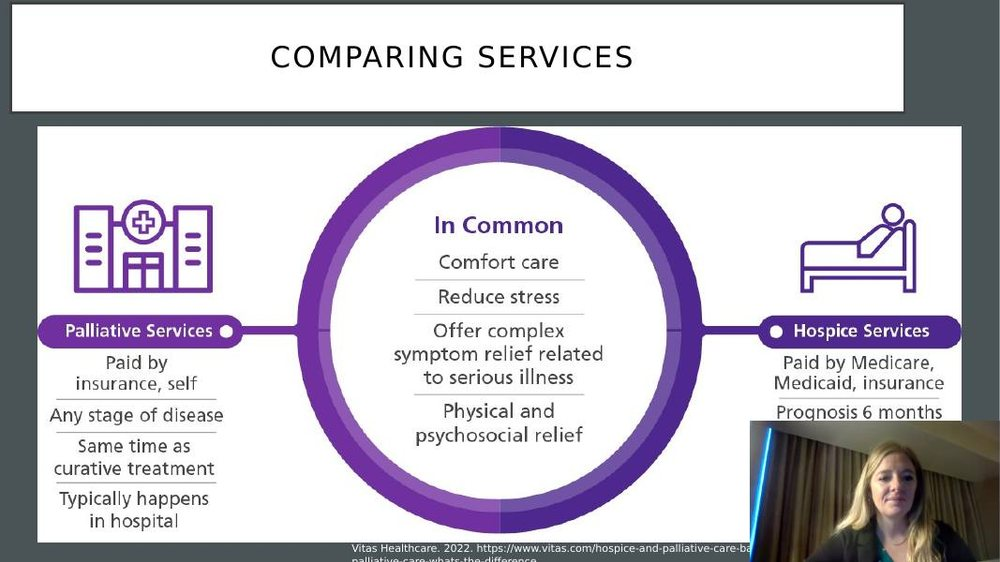
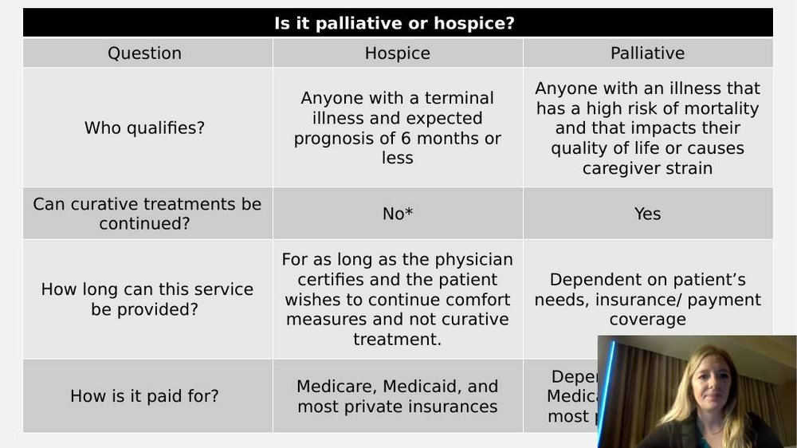
- Most people assume palliative and hospice are the same thing or are always delivered together — they are related but distinct, and knowing the difference matters for coordinating care and talking with other providers.
- Palliative care is an extra layer of support for anyone with a life-threatening illness, regardless of life expectancy — someone can receive palliative care at time of diagnosis, all the way through curative treatment, even if they're expected to recover.
- Hospice care requires an expected life expectancy of 6 months or less — a physician has to certify this prognosis for the patient to be eligible.
- Historically, palliative and hospice were offered together only at the very end, once "nothing else could be done." Care has since moved upstream: palliative care is now ideally involved from time of diagnosis as a layer of support alongside disease-directed therapy, with hospice added later if/when the prognosis becomes 6 months or less.
- Both are delivered by an interdisciplinary team and share the same underlying goal: comfort care and reducing suffering, physically and psychosocially, in the context of serious illness.
Eligibility, Payment & the "Live Discharge"
- Can curative treatments continue? Generally yes with palliative care, generally no with hospice — but there's an important exception. Eligibility and continued treatment decisions are also shaped by payer rules, not just philosophy of care.
- Worked example — dialysis on hospice: a patient admitted to hospice for a cancer diagnosis cannot also continue chemotherapy for that cancer. But if the same patient also has kidney failure that is not the diagnosis driving their hospice enrollment, dialysis may be allowed to continue because it's viewed as a comfort measure, separate from the qualifying terminal diagnosis. This often prompts a larger conversation about the treatment's utility (is it preventing suffering, and to what degree is it extending life).
- Payment: hospice is paid for by Medicare, Medicaid, and most private insurance; palliative care payment depends more on the patient's insurance/coverage. This payer distinction is part of why continuing curative treatment alongside hospice is often restricted — the two funding models can conflict.
- How long can hospice services continue? For as long as the physician keeps certifying that the patient still wants comfort-focused care and still has a ≤6-month prognosis. Hospice patients don't automatically get discharged the day they hit 6 months.
- "Live discharge": when a patient's condition stabilizes or improves enough that they no longer meet hospice's 6-month prognosis, they exit hospice care. This isn't rare — holistic symptom management in hospice can sometimes reduce the physical burden of fighting symptoms enough to actually extend a patient's life.
The Interdisciplinary Team
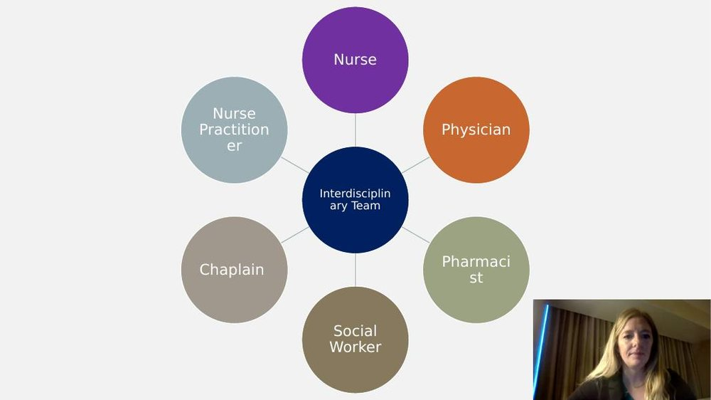
- In hospice care, the nurse drives care coordination — nurses and nurse aides spend the most time with the patient and work fairly autonomously to deliver services. The physician is also involved (recertifying eligibility, managing complex needs), but the team centers around the nurse.
- In hospital-based palliative care, the physician has more of a primary role, and the nurse has somewhat less of a leadership role on paper — though the bedside nurse is still functionally part of the interdisciplinary team, even without a formal team assignment.
- Social workers on both teams work at the top of their licensure — not just case management, but clinical care: psychological assessment and intervention as part of the whole-person, holistic approach that ties physical, psychological, psychosocial, and spiritual needs together.
Why Communication Is Hard & the Nurse's Central Role
![Diagram titled 3 Conversations showing three connected conversation types: the family meeting (ensure key topics are discussed, ensure family understands information, provide emotional support), the nurse-family conversation (elicit family's goals and needs, elicit understanding of prognosis, provide emotional support), and the nurse-physician conversation (elicit physician's perspective on prognosis and goals, present family and patient perspectives, and advocate for the family based on those conversations).](images/palliative-hospice-eol/three-conversations-model.jpg)
- Communication is the fulcrum of palliative/hospice care. Agreeing to hospice implies accepting a terminal illness and choosing comfort-focused care over curative treatment — if that acceptance isn't there yet, the patient may not be ready for hospice even if they're eligible by prognosis.
- Despite how essential it is, most nurses feel ill-equipped for these conversations. Formal communication training is limited in nursing education, and nurses often feel confident with physical care but uncertain and anxious about addressing emotional concerns — worried about "saying the wrong thing."
- The nurse has three distinct communication opportunities: the family meeting (ensuring key topics are covered and the family understands the information), the nurse–family conversation at the bedside (eliciting goals/needs and understanding of prognosis), and the nurse–physician/team conversation (relaying the physician's perspective and advocating for the family's perspective). Even though physicians are often perceived as driving the plan of care, the nurse is frequently the one actually driving it day to day.
- Common barriers to having these conversations: fear of provoking emotional distress, not knowing how to handle a patient's emotional outburst, not knowing the "right" words, feeling responsible if the conversation shapes the plan of care in the wrong direction, and simply lacking formal training.
Responding to Emotions: NURSE Statements
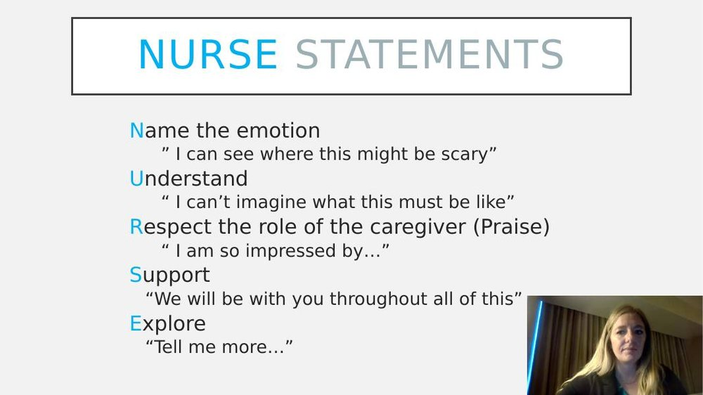
- Patients can't move forward with treatment decisions if their emotions aren't addressed first. The goal of an accepting response is to accept what the patient says non-judgmentally, acknowledge they're entitled to their own views/feelings, and validate their contribution to the relationship — rather than jumping to reassurance, rebuttal, or agreement.
- When we respond to emotion, we are not trying to fix the emotion. Avoid reflexively saying "don't be sad" or reading a patient's continued hope as "denial" — patients naturally oscillate between accepting a serious diagnosis ("I'm really sick") and hoping/fighting it ("I'm going to be fine"), and that swing is normal, not evidence they "don't get it."
- NURSE: Name the emotion ("I can see where this might be scary") — this is a hypothesis, and it's fine if the patient corrects it. Understand ("I can't imagine what this must be like") — never say "I totally understand," even if you've had a similar experience yourself, because it can feel invalidating. Respect the caregiver's role/praise ("I am so impressed by..."). Support ("We will be with you throughout all of this"). Explore ("Tell me more...") — used to get more understanding, especially if your "name" guess was wrong.
"I Wish"/"I Worry" Statements & the Power of Silence
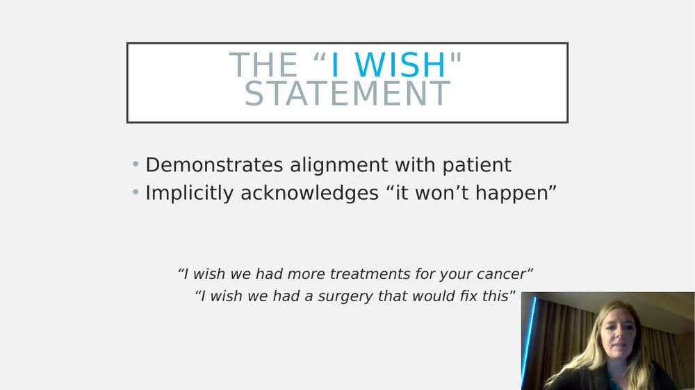
- "I wish" statements demonstrate alignment with the patient and implicitly acknowledge that what they want isn't going to happen, without directly correcting or contradicting them. Example: instead of correcting a patient who says "I don't want to go through this treatment," try "I wish there were a different path for you."
- "I worry" statements share the possibility of a bad outcome, often used when delivering difficult news — e.g., "I worry that the chemotherapy treatment might make you really sick," or "I worry that without your care partner present, this could be very isolating." It's a way to share concerning information without sounding authoritarian.
- Silence is an empathic response in its own right. It can feel uncomfortable or awkward for the nurse, but it shows support, gives patients and families room to talk (and they often will fill that space with information you wouldn't otherwise get), and lets you simply witness a patient's suffering rather than rushing to interrupt or fix it. A helpful guideline: give a patient roughly 15 seconds of silence before saying anything, especially if they're crying or upset.
Advance Care Planning & Legal Documents
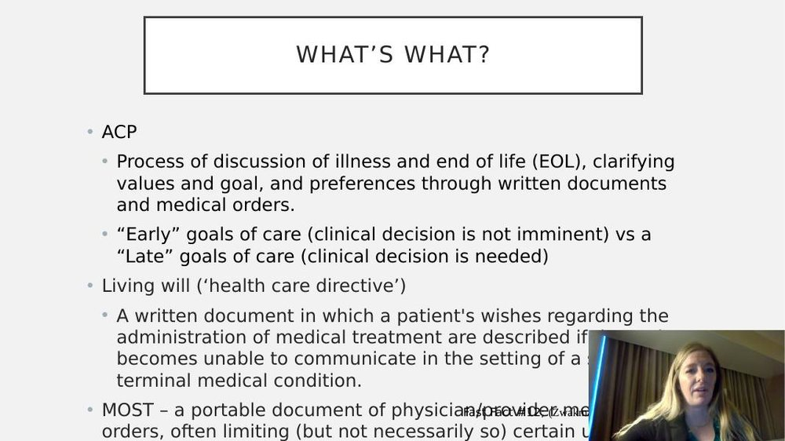
- Advance care planning (ACP) is the process of eliciting a patient's goals, preferences, and values — through conversation and/or written documentation — for future medical decisions. Despite its value, ACP conversations happen far less often in clinical practice than research suggests they should, partly because nurses often don't feel empowered to initiate them and worry about triggering conflict.
- Early goals-of-care conversation: held when the relevant clinical decision is not imminent (e.g., discussing future feeding-tube possibilities early in a cancer treatment course). Late goals-of-care conversation: held when the clinical decision is imminent (e.g., a hospitalized patient's O2 sats are dropping and intubation is being considered right now).
- Living will (a "health care directive," not the same as a last will and testament): a written document describing a patient's wishes about medical treatment if they become unable to communicate — includes naming a health care surrogate and organ donation wishes.
- Last will and testament: the legal document that determines where a person's property/assets go after death — unrelated to medical treatment decisions.
- MOST form (Medical Orders for Scope of Treatment): a portable physician order directing medical treatment — only appropriate for patients with serious or advanced chronic illness, not for the general/healthy population. A living will is the appropriate advance planning tool for everyone else.
- Kentucky's two legal ACP documents: the Kentucky Living Will (the state's official form; no attorney required, but it needs either 2 qualifying witnesses or notarization — relatives, heirs, and the patient's own healthcare provider cannot serve as witnesses) and Five Wishes, a comprehensive advance-directive booklet that's legally recognized in 42 states, including Kentucky. Five Wishes requires the same 2-witness-or-notarized rule and can only be completed by a competent individual able to make their own healthcare decisions.
Ethical Issues in Serious Illness & End-of-Life Care
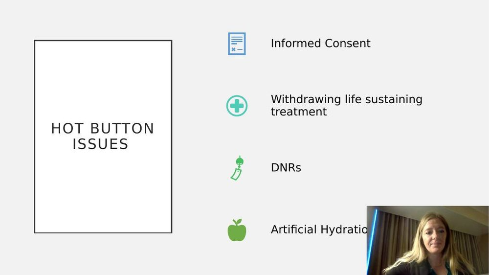
- Informed consent: making sure the patient truly understands the treatment they are agreeing to (or declining) — including understanding and agreeing with hospice philosophy itself before being enrolled.
- Withdrawing life-sustaining treatment: raises difficult "when/how" questions, and families are rarely ever fully "ready."
- DNR/code status conversations are a common source of ethical concern. Providers sometimes use coercive, overly graphic language when discussing code status, effectively intimidating or manipulating a patient away from choosing CPR/intubation — this is a real ethical problem, distinct from having an honest, non-manipulative conversation about likely outcomes.
- Artificial hydration/nutrition: the term "feeding tube" is common but somewhat manipulative language, because "feeding" implies the emotional act of caring for someone. The more technical terms — artificial hydration, artificial nutrition — better convey what's actually being decided and can reduce that manipulation. Families commonly worry their loved one is "starving to death"; understanding the natural decline in appetite/food interest during the dying process (covered below) helps address that fear.
Factors Influencing EOL Care & Medical Aid in Dying
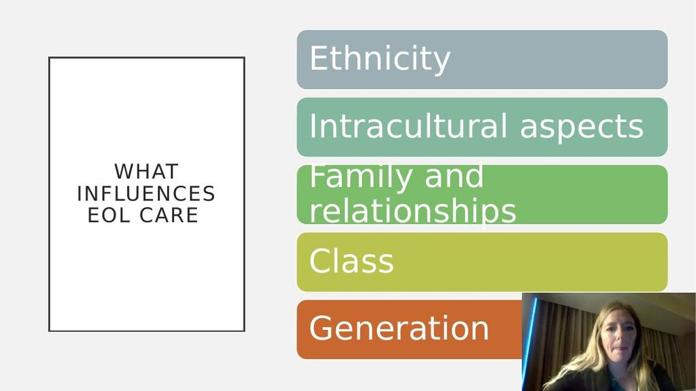
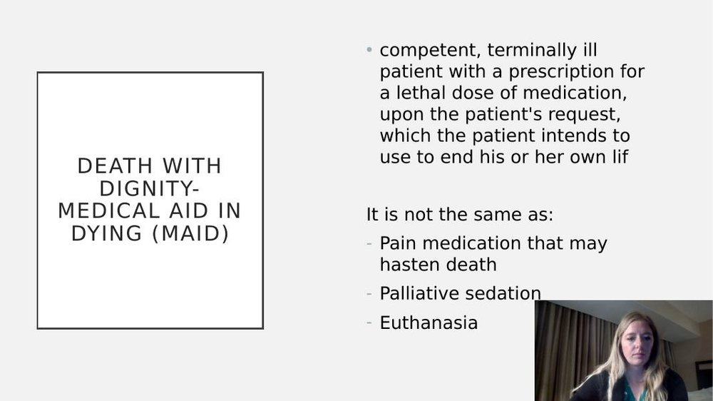
- End-of-life care decisions are shaped by more than just medical facts. Key influences include ethnicity and intracultural differences (variation even within one culture, e.g. modern vs. traditional expression of beliefs), faith/cultural traditions, family relationships and dynamics (long-standing family conflict or power struggles often surface at the bedside during a serious illness), and class/access (insurance and financial resources affect how much care — and what quality of care — a patient can receive).
- Medical Aid in Dying (MAID), formerly called physician-assisted suicide: a competent, terminally ill patient is prescribed a lethal dose of medication, at their own request after counseling, which they themselves choose to take to end their own life.
- MAID is NOT: euthanasia (which involves someone else administering the means), pain medication that may incidentally hasten death, or palliative sedation. Each state that permits MAID has its own specific requirements — for example, the patient generally must be able to pick up the prescription themselves.
The Dying Experience & Syndrome of Imminent Dying
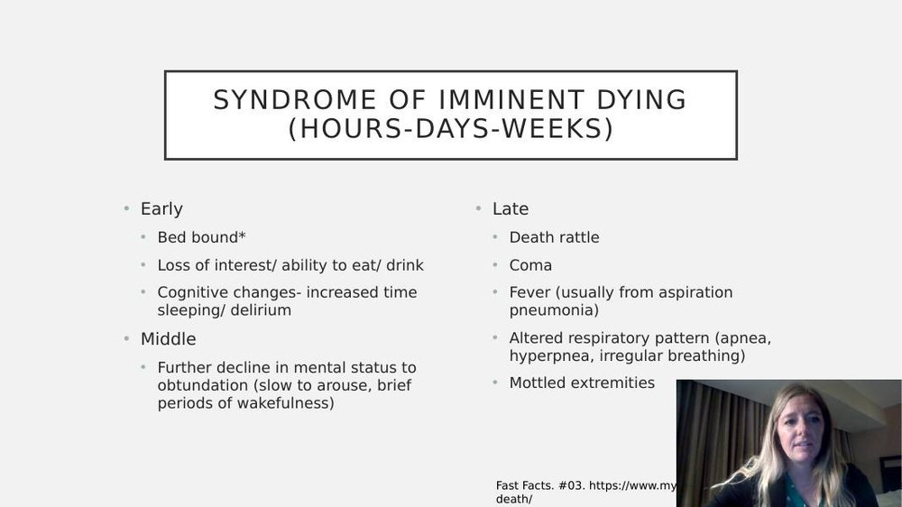
- The broader dying experience can last weeks to a year (source: Wisconsin Fast Facts). Common features as death approaches: social withdrawal (patients naturally put distance between themselves and loved ones — distinguish this from depression), decreased food/fluid interest (the body needs less as it prepares for the final days — if a patient wants something, offer it, but don't be surprised if nothing sounds good; treatments like chemo/radiation also alter taste), sleep disruption, disorientation, decreased senses (vision/hearing — though hearing is thought to be one of the last senses to go, so continue talking to dying patients), incontinence, and physical changes like cachexia, lower blood sugar, and higher heart rate.
- The syndrome of imminent dying describes the final hours-to-weeks in three phases. Early: bed-bound, losing interest/ability to eat or drink, increased sleeping and delirium (day/night reversal). Middle: further decline to obtundation — slow to arouse, only brief wakefulness. Late (hours): death rattle (secretions pooling at the base of the throat once muscle control is lost — not distressing for the patient even though it's disturbing to hear; aggressive deep suctioning with a Yankauer is often more uncomfortable for the patient than leaving it, though medications can help manage it), possible coma (unresponsive but still breathing), fever (often from aspiration pneumonia, managed with cool washcloths), altered respiratory pattern (apnea with increasingly long pauses — commonly 30 seconds to a minute between breaths in adults, but can be prolonged to several minutes in infants/newborns, so don't assume death has occurred from a long pause alone), and mottled extremities (toes/feet turn purple/blue as circulating blood is shunted to vital organs).
Family Concerns, Morphine, Grief & Bereavement
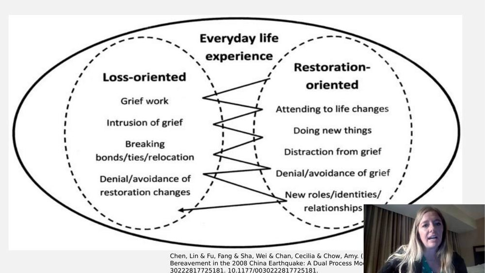
- Family concerns during the dying process: families commonly ask "are we starving them?", "what should we expect?", "can they hear what I'm saying?" Give families concrete information (using everything above) and involve them directly in care — offering a washcloth, helping keep the patient's mouth moist, helping change the bed — and ask them to watch for signs of pain/discomfort.
- Morphine does NOT hasten death when properly dosed. This is a persistent myth ("we gave her morphine and then she died"). There is no difference in survival with opioid dose or dose changes when accepted dosing guidelines are followed; morphine-related toxicity (drowsiness, confusion, loss of consciousness) shows up well before any significant respiratory depression. The intent of morphine at end of life is to relieve pain, not to cause death, and the risk of it hastening death is considered minimal and often overestimated.
- Grief and bereavement: Kübler-Ross's stages of grief made the topic of dying and grief more discussable, but the "stages" framing has become distorted — grief is fluid, not a strict sequence, and stages are often re-experienced within minutes to hours to days.
- Anticipatory grief: normal, natural grief that occurs before a death, mirroring post-death mourning. It includes grief over the anticipated loss of the person as well as anticipated loss of intangible things — future plans, dreams, milestones. This is especially complex in pediatric death (including miscarriage).
- Bereavement refers specifically to the post-mortem grief response, distinct from the anticipatory grief that can occur before the death.
- Dual process model of grief (a more accurate alternative to strict "stages"): people oscillate between loss-oriented tasks (grief work, feeling intruded upon by grief, breaking bonds/ties) and restoration-oriented tasks (attending to life changes, doing new things, distraction, embracing new roles/identities) — sometimes avoiding both in a more/less helpful way. This oscillation mirrors the same back-and-forth seen in patients processing their own terminal diagnosis.
Self-Test Flashcards
Click a card to flip it and check your answer.
What's the key eligibility difference between palliative and hospice care?
Palliative care: anyone with a life-threatening illness, regardless of life expectancy, and curative treatment can continue. Hospice care: requires a physician-certified life expectancy of 6 months or less, and curative treatment for the qualifying diagnosis generally stops.
Why might a hospice patient still be allowed to continue dialysis?
If the dialysis is unrelated to the diagnosis that made them hospice-eligible (e.g., hospice for cancer, but kidney failure is separate), it can be continued as a comfort measure, viewed separately from the qualifying terminal diagnosis.
Who is central to the interdisciplinary team in hospice care versus hospital-based palliative care?
In hospice, the nurse drives care coordination and works fairly autonomously. In hospital-based palliative care, the physician has more of a primary role — though the bedside nurse still functions as part of the team.
What does each letter of the NURSE mnemonic stand for?
Name the emotion, Understand, Respect the caregiver's role (praise), Support, Explore. Used to respond to a patient's emotion instead of trying to fix it.
What's the purpose of an "I wish" statement, and why not just correct the patient directly?
It demonstrates alignment with the patient's hopes while implicitly acknowledging the wish won't happen, without directly confronting or contradicting them.
Why is silence considered an empathic communication tool at end of life?
It shows support without rushing to fix the emotion, gives the patient/family space to talk and process, and is therapeutic even though it may feel uncomfortable to the nurse.
What's the difference between a living will, a last will and testament, and a MOST form?
Living will: a health care directive describing treatment wishes if the patient becomes unable to communicate. Last will and testament: determines where property/assets go after death. MOST form: a portable physician order for medical treatment, only for patients with serious/advanced chronic illness — not for the general healthy population.
Why is it considered an ethical problem to use graphic, scary language when discussing code status with a patient?
It can be coercive/manipulative — using fear to intimidate the patient away from a choice like CPR or intubation, rather than supporting an honest, informed, autonomous decision.
What is Medical Aid in Dying (MAID), and how is it different from euthanasia?
A competent, terminally ill patient is prescribed a lethal dose of medication, at their own request, which they themselves choose to take to end their own life. It is not euthanasia (someone else administering the means), not the same as pain medication that may hasten death, and not palliative sedation.
What causes a "death rattle," and should it be aggressively suctioned?
Secretions pooling at the base of the throat once the patient has lost the muscle control to clear them. It's usually not distressing to the patient even though it's disturbing to hear — aggressive deep suctioning (e.g., with a Yankauer) can be more uncomfortable for the patient than leaving it; medications can help manage secretions instead.
Does morphine hasten death in an appropriately dosed hospice patient?
No. There's no difference in survival with opioid dose changes when accepted dosing guidelines are followed — toxicity (drowsiness, confusion, loss of consciousness) appears well before any significant respiratory depression, and the intent is symptom relief, not death.
What is the dual process model of grief, and how does it differ from Kübler-Ross's stages of grief?
Grief oscillates between loss-oriented tasks (grief work, intrusion of grief) and restoration-oriented tasks (attending to life changes, new roles/identities) rather than moving through fixed sequential stages — a more accurate model than strict stage-based grief.
Practice Questions
All 20 Must Know + Extra Practice questions for this section, pulled from the same bank as Build Your Own Exam. Answer each, then submit to see your score and rationales.